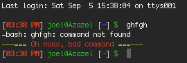
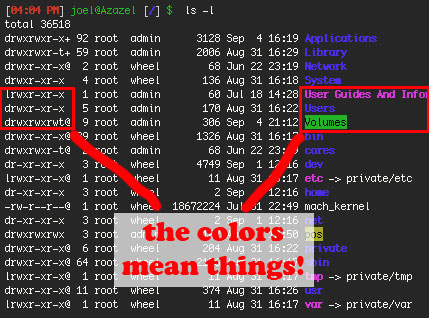
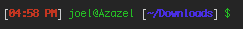
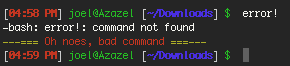

If the title suggests to you either a party, or violence, then perhaps this post isn’t for you. If instead you are imagining a blank window filled with text, read on. If you are confused right now, but also strangely curious, you may feel free to read on.
I spend quite a bit of time inside a terminal window, doing various things that are just easier and faster than the GUI ever will be. My shell of choice is bash (by default because its what OS X and debian variants ship with) and i have picked up a number of useful login scripts that make the shell, and even the prompt itself, much more informative. And now i will share:
I keep all of my bash configs in a file in my home directory called .bash_login which gets read each each a new terminal session begins. The same can be accomplished by adding these changes to .bashrc. If you don’t have either of them you can create the file in your home folder called .bash_login. Like so: touch .bash_login
First: Colors
More than just prettifying the shell output, colorizing bash instantly adds layers of information to basic commands like ls.
3 | export LSCOLORS=ExFxCxDxbxegedabagacad |
The first line says, well nothing, it’s just a label, the hash mark prevents bash from reading the contents of the line. But it doesn’t prevent you from reading it. See? A comment. The second line says “Colorize the command line interface? Why yes!”. And the third says what colors to make everything (believe it or not). If you’d like to tweak the colors yourself a bit, i’d recommend this handy color code generator, because trying to manually adjust the LSCOLORS can be (read: is) maddening.

The different colors indicate useful pieces of info about your filesystem. Like this screenshot of my root directory. At a glance i can see file permissions, whether something is a folder, an alias, an executable, and so on.
Second: History
Spending as much time as i do in the terminal, the history feature of bash quickly becomes invaluable. Here are 3 commands i’ve added to my configuration that i find O so helpful!
2 | export HISTCONTROL=erasedups |
Ignoring the comment line, the first command tells bash to ignore duplicate commands. Really handy if you repeat commands in the shell a bunch, or just for ignoring the ones you type all the time. The second expands the default history file size, i believe the default in OS X is 500 lines. I’ve upped mine to 10,000.  And finally, the histappend command tells bash to append to the history file on startup, overriding the default behavior which is to overwrite (gasp!).
And finally, the histappend command tells bash to append to the history file on startup, overriding the default behavior which is to overwrite (gasp!).
Added bonus: Ctrl + r will activate the reverse-i-search. Try it. You can then begin typing to search your history file for any command currently stored there. Super-handy for remembering “How exactly did i do this last time?”
Third: Your PATH
2 | export PATH="/usr/local/bin:/usr/local/sbin:/usr/local/mysql/bin:$PATH" |
A simple one-liner, but not to be underestimated. Your PATH is the list of directories whose contents are accessible without having to know exactly where the command is kept. I use the command mysql -u root all the time. But i dont really need to know that the mysql executable resides in the directory /usr/local/mysql/bin/ nor do i need to type that every time, because i’ve added that directory to my PATH. Make sense? Add your own, the line is simply a colon-delimited listing of directories, simple.
Fourth: The prompt
Lastly, but least leastly, is the prompt. The thing you stare at all the time. It's always there. By default it'll usually tell you your username, hostname, and maybe your current directory. With only a little bit of bash trickery it can be made to be super-informative.
2 | PS1=”\`if [ \$? != 0 ]; then echo \[\e[33m\]—=== \[\e[31m\]Oh noes, bad command \[\e[33m\]===—; fi\`\n\[\e[0;37m\][\[\e[1;31m\]\@\[\e[0;37m\]] \[\e[0;32m\]\u@\h \[\e[0;37m\][\[\e[1;34m\]\w\[\e[0;37m\]] \[\e[0;32m\]\$ \[\e[0m\] “ |
Gaaa! What is all that?!@? OK, all this is really saying is "make the bash shell spit out the time, the username, the hostname, and the current working directory. Really. O, and there's the special invalid command line in there too. Here's what the prompt looks like:

And here's what the error output looks like:

Many thanks to HackADay.com for the idea for this.
Lastly: Aliases
Whew, this is a big one. Probably deserving of it own article.
Here's is my entire (abridged) .bash_login file.
03 | export LSCOLORS=ExFxCxDxbxegedabagacad |
06 | alias mystop="sudo launchctl unload -w /Library/LaunchDaemons/com.mysql.mysqld.plist" |
07 | alias mystart="sudo /usr/local/mysql/bin/mysqld_safe &" |
10 | export HISTCONTROL=erasedups |
15 | export PATH="/usr/local/bin:/usr/local/sbin:/usr/local/mysql/bin:$PATH" |
18 | PS1="\`if [ \$? != 0 ]; then echo \[\e[33m\]---=== \[\e[31m\]Oh noes, bad command \[\e[33m\]===---; fi\`\n\[\e[0;37m\][\[\e[1;31m\]\@\[\e[0;37m\]] \[\e[0;32m\]\u@\h \[\e[0;37m\][\[\e[1;34m\]\w\[\e[0;37m\]] \[\e[0;32m\]\$ \[\e[0m\] " |
I'd LOVE to hear what other people are doing with their terminals that they find helpful, smart, or fun. Leave a comment and let me know what you know!
Thanks for following along everyone who made it this far. You are all getting gold-stars!


{kind=link}
{kind=link}
{kind=link}
{kind=link}
Great stuff man, and perfect timing! Taking a programming class that delves into some UNIX right now, so probably nothing I can add to help you out. The server we play on also has a bash shell, so I am excited to try some of your wizardry. Might have to pay attention to facebook so I don't miss cool stuff like this. Take it easy man, probably see ya sometime in october. K
how about the python shell, or the z shell?
Under Puppy Linux, the Bash default colors are crap. The light blue cannot be seen. I found your info by searching on Google. Do not know yet, but I do hope it contains enough info to make the output readable, and now-to-have, in a slightly large size font. Thanks for your efforts.